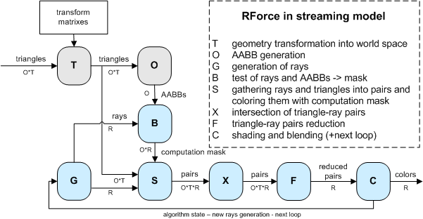

|
INFERNO NEWS
|
|
14.08.2004
|
|
master thesis released
RForce introduced
NV38Box released
BrookBox released
project log updated
|
|
|
25.05.2004
|
|
|
project log updated
|
|
|
10.05.2004
|
|
|
project log updated
|
|
|
06.05.2004
|
|
|
project log updated
|
|
|
03.05.2004
|
|
|
project log updated
|
|
|
29.03.2004
|
|
project log updated
links updated
|
|
|
|
|
|
|
|
INFERNO RFORCE METHOD | This document aims to briefly describe method RForce used in NV38Box.
You can download full master thesis (Czech language).
I had some requests for text translation. I'm not able to translate full text but I can provide the main parts here.
This is a translation of the main part describing the RForce method and it's results.
Background
Maybe you have read Purcell's [1+3] or Carr's [2] papers on raytracing in GPU.
This method is based on some of their ideas but is slightly different in
some cases.
This method was developed under Inferno project (http://inferno.hildebrand.cz).
We assume you know how ray tracing works and maybe you should understand
main concepts in papers [1] and [2] for better understanding of this method.
See some screenshots of input scenes:
Features of RForce method:
- dynamic GPU raytracer running in realtime for simple scenes and low
resolutions
- scene = 16 triangular objects per 64 triangles (total up to 1024 triangles)
- using AABB as an acceleration structure
- per pixel shading for both primary and secondary rays
- no dynamic flow control as opposite to Purcell's method
- hybrid algorithm (primary rays = classic rasterization)
- nVidia only, NV38 path, NV40 path, brute force for comparison
- implementation performs only secondary reflection rays,but method is more flexible in general
- tested on WinXP, GeForce 5950 Ultra, ForceWare 60.xx
- slow for greater resolutions than 128x128 (but working)
See some screenshots of raytraced scenes:


What do we want ?
We want triangular scenes (no procedural one-shader with spheres&planes tricks!).
We want to trace array of rays in the GPU.
We want to shade their hits in the GPU.
We want to display final picture in the GPU.
We want to do it effective even for dynamic scenes !
RForce algorithm in streaming model

Let's say we have to compute R rays for O objects each with T triangles.
So whole scene has O*T triangles.
A core part of the algortihm are streaming units S-X-F. The unit S has stream of rays and
stream of triangles on input. The unit S produces stream of all pairs triangle-ray ordered per rays.
The unit X has stream of pairs on input and computes intersection between ray and triangle
in it's kernel. The unit X produces stream of tested pairs. The unit F reduces chain of O*T pairs into one value.
This value represents the first hit from all reduced pairs for given ray. This part of the machine is very similar
to Carr's Ray Engine. The only difference is that we compute first hit using reduction and Carr is using depth test
(we need depth test for computation mask purpose - see later).
Well, now let's add optimization using bounding volumes. We use AABBs for marking pairs which needen't be computed.
This mask is produced in unit B using AABB-ray intersection kernel as shown on picture.
The unit S has another task to prepare computation mask on produced pairs.
Ok, now let's talk about dynamic scene handling. A scene geometry is stored in local object coordinates.
We have set of transformation matrixes which transform objects into world-space. Let's add new unit
T which does the transformation from local-space to world-space and outputs results into stream of triangles (O*T).
We also need to build AABBs in world space, because all intersections are computed in world-spaces.
So we add unit O which gets transformed triangles on input and computes AABBs as output.
In case we want whole raytracer on GPU side, the last step is to add ray-generation unit and shading unit.
The unit G is ray-generation unit which produces stream of rays in world-space for unit B and unit S.
The unit C is shading unit working with nearest hits from unit F. The unit C produces colors to be blended
into final image and/or loops the computation for new rays.
The blue-part of the algorithm can be looped for computation different sets of rays
(primary, secondary reflection, secondary refraction, shadow rays, etc.). It depends on loop number
what should be generated in unit G and what are the inputs for this generation. For example to generate
secondary rays, the unit G needs to know primary hits.
Data structures
We have scene with 16 objects (4x4) each consists up to 64 triangles (8x8). So the whole scene has up to 1024 triangles (32x32).
It is possible to customize these numbers, but we will talk only about these numbers to keep the description simple.
We have triangle related data like positions, normals, colors, texture
coordinates, and so on.
We store triangle related data in texture using so called "block
scheme". This is simple layout to allow easy reduction
from triangles level to objects level and possibly to last level of one
texel. See the picture. You can see one whole block of data
and discover sixteen 8x8 sub-blocks representing objects. These
sub-blocks can be reduced to objects level in three steps with
reduction kernel 2x2 -> 1x1.
In every such a picture we are able to store per triangle information in four 32-bit floating point
components (32-bit floating point RGBA format for texel).
Before we start description of the algorithm in the GPU,
we want to introduce schematic view of GPU pipeline.
Some next pictures are derived from this scheme.
RForce algorithm in GPU
preprocess: build static data structures (textures and VBOs)
for every frame:
1. transform scene geometry and store results into set of textures (T)
2. compute bounding boxes using transformed geometry (O)
3. render primary rays using classic scene rasterization (with custom shading)
---
4. generate rays (G) (secondary reflection, refractions, shadow rays, whatever you want)
5. prepare computation mask (B)
6. intersect rays with triangles using computation mask (S-X)
7. reduce hits (F)
8. shade rays (C)
9. blend results to main image (according to rays contributions)
---
10. display final image
Note: Steps 4-9 can be looped more times with differently generated rays.
Contribution is blended to the framebuffer after every loop.
Current implementation does only one loop generating secondary reflection rays.
See steps in pictures:
Legend (from left):
1. data structures generated in steps 1 and 2
2. primary rays from step 3
3. rays' starts from step 4
4. rays' ends from step 4
5. computation mask for accelerating raytracing from step 5
6. intersecting space (huge buffer - this is only a part of it) - yellow points are incomming hits from step 6
7. reduced intersecting space from step 7 (all segments) - reduction = find best hit per ray
8. shaded hits = contribution to the final image from step 8
9. final image composited from 3 and 9
Preprocess
The scene geometry is sent into GPU many times. That is why we create one interleaved
static VBO with this data and upload it to the GPU memory once.
The structure of the "scene VBO" is following:
- Vertex position in local coordinates [x,y,z].
- Vertex normal in local coordinates [x,y,z].
- Triangle material (repeated 3x) [mat1,mat2,mat3,mat4].
- Vertex texture coordinates [tu,tv].
- Triangle color (repeated 3x) [r,g,b,vertex counter].
- Precomputed custom optimization data [o1,o2,o3,o4].
The data is specified in 32-bit floating point precision. That results into 80byte structure for each vertex.
We use gl*Pointer to specify this interleaved data into OpenGL for our computations.
We also store these static scene textures in block scheme:
- face colors: [r,g,b,packed(mat1, mat2)]
- material and uv: [packed(u1v1), packed(u2v2), packed(u3v3), packed(mat1,mat2)]
mat1 = material coefficient
mat2 = reflection coefficient
mat3 = refraction coefficient (unused)
mat4 = eta for refraction (unused)
uv = vertex texture coordinates into image texture map.
For simplicity we have baked all objects textures into one big texture.
packed means using pack_2half (see Cg manual).
1. Transform scene geometry
Neat trick:
Use vertex engine to do the transformation of positions and normals.
But do not rasterize primitives => store transformed data into texture
using block structure.
For positions:
Send scene into pipeline as GL_POINTS with size 1 pixel (use static scene VBO)
Vertex program transforms vertex position into world space as normally would
BUT writes it as texture coordinates for fragment program.
AND writes raster position according to block structure into output fragment position
INSTEAD OF real position.
Fragment program simply stores incomming value.
For normals:
Same trick, but transform normal into world space.
Result: we have 3+3 textures using block structure.
First three are transformed positions for vertices A,B and C respectively.
Second three are transformed normals for vertices A,B and C respectively.
2. Compute bounding boxes

We have 3 textures with transformed world positions from step 1.
Perform reduction steps on these textures to get minimum and maximum
coordinates for every sub-block (object). Sub-block is 8x8 so we need
3 reduction passes. And one more extra pass for merging results from all three maps.
Fragment program simply compares coordinates and writes min or max to the output.
You can see pbuffer ping-pong algorithm on the picture.
Result: We get two textures holding min and max values for every object (=we
have AABBs computed on the GPU).
This texture is using "reduced block structure to objects level",
because sub-blocks are reduced to one pixel.
3. Render primary rays
Use classic OpenGL with custom shading (per pixel lighting).
Use static scene VBO. Nothing special here. We are rendering into 512x512 buffer.
4. Generate rays
We are raytracing in resolution 128x128 (or others).
We need to generate
128x128 buffer with rays' START positions and
128x128 buffer with rays' END position.
We render scene two times (again using static scene VBO).
1st time use shader to generate rays' STARTS
2nd time use shader to generate rays' ENDS (here takes place reflection formula)
Results: we get two buffers with rays definition for next steps.
5. Prepare computation mask
One pixel represents one pair ray-object. We have 128x128 rays and 4x4 objects per ray.
There is executed fragment program for every pixel in buffer 512x512 rendering one quad.
Fragment program computes intersection between given object's AABB and ray.
Result: 512x512 buffer with answers if there is hit or not.
This buffer can be used as computation mask for ray-triangle intersections.
6. Intersect rays with triangles using computation mask
How to trace ?
One pixel represents one ray-triangle pair.
We have 128x128 rays and 32x32 triangles per ray.
There should be executed fragment program for every pixel in buffer 4096x4096 rendering one quad.
Such a 32-bit floating point buffer does not fit into GPU memory.
So we trace per partes (one part is called "segment").
More on this in part "Segmetnation".
7. Reduce hits
Rays are distributed in buffer using block scheme.
We need to reduce every block to one texel to get first hit.
We do 5x reduction with hit time comparison. We use ping-pong algorithm in one two-surface pbuffer.
How to speed this up with computation mask ?
More in part "Raytracing acceleration".
8. Shade rays
Incomming hits (with their info) are used for shading.
This shader is quite complicated (doing per-pixel shading of secondary
reflected points with two point lights)
Scene data structures prepared in textures are used.
Result buffer is 128x128 and contains contribution colors for shaded rays.
Contribution weight is stored in alpha channel.
9. Blend results into main image
Shaded image from previous step represents contribution of actual group of rays.
Contribution of every pixel is stored in alpha channel.
We use blending to add this contribution to the final imge using alpha.
We did raytracing in lower resolution (128x128) than is final image resolution (512x512),
So, we draw one quad 512x512 into final image using texture mapping with texture stretching and filtering.
10. Display final image
We did accumulation of all contributions into BACK buffer of the main context.
We do just glSwapBuffers() :-)
Segmentation
Because there is not enough GPU memory to do ray-triangle intersections in one go in step 6,
we need to trace per partes. These blocks are called segments and correspond
to tiles of final image. Tiling is dependent on how much memory is available
and what resolution do we ray trace.
Because we are producing tiles from left to right, from top to bottom.
We can move over the buffer without destroying previous data.
At the time there is only one tile in progress (occupies buffer).
But previous are there in reduced form.
Raytracing acceleration
We use method called "computation mask". It is not needed to intersect
all ray-triangle pairs. That is why we have built bounding boxes.
These tests are stored in buffer 512x512 from step 5 and this buffer is used as computation
mask.
How to reject fragments in step 6 ?
This method differs between NV38 and NV40.
We use early-z functionality available on these GPUs.
We have implemented three methods:
1. brute force - no mask is used at all
2. NV38 - mask must be read into PBO, then rendered as GL_POINTS using PBO rebound as VBO
3. NV40 - mask is produced using one-quad fragment program with discard operation with depth writing
See detailed code reference for more info.
Results:
We created 5 scenes:
- Balls: 16 objects, 1024 triangles.
- Teapot: 15 objects, 578 triangles.
- Planets: 13 objects, 736 triangles.
- Rotor: 11 objects, 518 triangles.
- Prism: 2 objekts, 18 triangles.
We measured 4 resolutions:
- 64 x 64 pixels.
- 128 x 128 pixels.
- 256 x 256 pixels.
- 512 x 512 pixels.
We included 5 following modifications of base algorithm:
- Scheme A: classic rasteriazation of primary picture (step 4 only).
- Scheme B: Scheme A and steps 1+2.
- Scheme C: RForce without computation mask (brute force).
- Scheme D: RForce with NV38 optimization.
- Scheme E: RForce with NV40 optimization.
We tested 2 following hardware configurations:
- NVIDIA GeForce 5950 Ultra, Athlon XP 2400+, nForce2, 512MB RAM, FW62.20.
- NVIDIA GeForce 6800 Ultra (Quadro FX 4000), Pentium 4 2.80 GHz, Intel 875, 1GB RAM, FW61.77.
Results for FX5950:
Results for Q4000:
I would like to thank Christian Lessing a Jeffrey Sing Kwong for providing us with the Q4000 results.
Graph shows results for schemes C,D,E (click for detailed picture):

Graph conclusions:
- Q4000 is two times faster than FX5950 in brute force computation.
- FX5950 achieved 4x speedup using NV38 path in scheme D.
- Q4000 has disabled early-Z ? Neither scheme D nor scheme E are optimized with computation mask.
We can estimate number of ray-triangle intersectins per second and number of computed rays per second
for FX5950.
Scheme C is running ~5FPS in 64x64. So we do 64x64*32x32*5 => 20M ray-triangle tests per second.
But there is overhead of shading and other kernels. We also use plain Cg output which can be further optimised.
Scheme C is running ~5FPS in 64x64. So we are doing 64x64*5 => 20K rays computed per second.
If we take scheme D which is running ~20FPS we get 80K rays computed per second.
Here is comparison table with related work by Purcell, Carr and Wald:

Conclusion:
1. It is possible to implement full raytracer on GPU side without dynamic flow control (for dynamic scenes).
2. Our raytracer is able to run at interiactive rates only for trivial scenes (1024 triangles) and small resolutions (128x128).
3. Compared in performace is our implementation/method weaker than Purcell's and Carr's.
We did not take too much care for kernel assembly optimizations.
At least in ray-triangle intersection rate we should be able to achieve Carr's values with more attention, because
core part of the RForce raytracer is just modified Ray Engine.
We provide our full implementation to the public.
|
References:
| [1] | T. J. Purcell, I. Buck, W. R. Mark, and P. Hanrahan. Ray Tracing on
Programmable Graphics Hardware. In to appear in Proc. SIGGRAPH, 2002. | | [2] | Nathan A. Carr, Jesse D. Hall and John C. Hart, The Ray Engine,
UIUCDCS-R-2002-2269 March 2002 | | [3] | Timothy J. Purcell, Ray Tracing on a Stream Processor, Ph.D. dissertation,
Stanford University, March 2004. | | [4] | I. Wald, C. Benthin, A. Dietrich and P. Slusallek. Interactive
Distributed Ray Tracing on Commodity PC Clusters State of the
Art and Practical Applications. Lecture Notes on Computer Science,
2790:499 508, 2003. (Proceedings of EuroPar 2003)
|
|
|
|
|


{kind=link}
{kind=link}
{kind=link}
{kind=link}
{kind=link}
{kind=link}
{kind=link}
{kind=link}
{kind=link}
{kind=link}
{kind=link}
{kind=link}
{kind=link}
{kind=link}
{kind=link}
{kind=link}